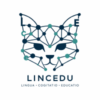

Andrea Cimmino
Investigador Principal
Ontologías, grafos de conocimiento y plataformas de datos interoperables.Perfil Portal científico · Perfil Scholar
Team
El equipo combina experiencia en interoperabilidad semántica, extracción de datos, procesamiento del lenguaje natural, búsqueda conceptual y modelado del dominio.
Researchers
Investigador Principal
Ontologías, grafos de conocimiento y plataformas de datos interoperables.Perfil Portal científico · Perfil Scholar
Miembro del equipo investigador
Extracción de datos desde fuentes no estructuradas, PLN, QA y búsqueda multilingüe.Perfil Portal científico · Perfil Scholar
Miembro del equipo investigador
Gramáticas del lenguaje, modelos del dominio y transformación entre modelos.Perfil Portal científico · Perfil Scholar
Working team
Personal técnico contratado del proyecto GUIA
Especialidad pendiente de completar. Participa en tareas de desarrollo, análisis y apoyo técnico dentro del proyecto GUIA.Personal técnico contratado del proyecto GUIA
Especialidad pendiente de completar. Participa en tareas de desarrollo, análisis y apoyo técnico dentro del proyecto GUIA.Personal predoctoral del proyecto GUIA
Experto en desarrollo y despliegue Web.Collaborators
Colaborador del proyecto GUIA
Perfil Portal científico · Perfil Scholar
Colaboradora del proyecto GUIA
Perfil Portal científico · Perfil Scholar

Grupo de Innovación Educativa colaborador con el proyecto GUIA